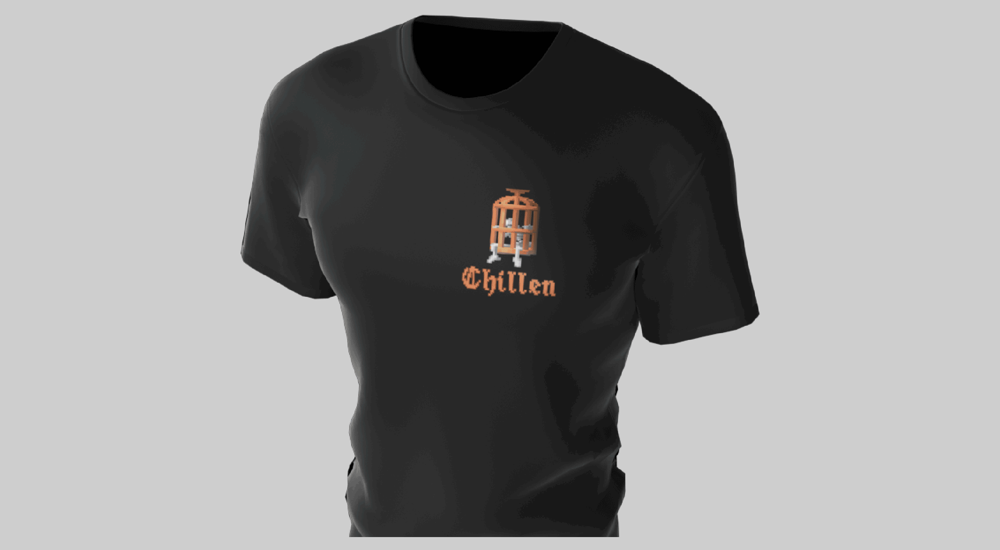
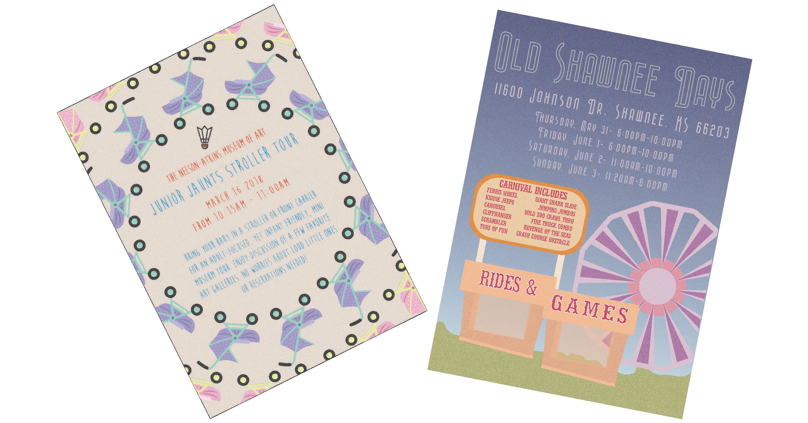

GRANT TAYLOR CZERNICKI.
Designer & Developer.

ELECTRONIC ELEVATOR PITCH.
Who & What.
Hello I am Grant Czernicki, an ambitious designer and innovative front-end web developer. My focus is on practical, functional and dynamic design to help build the identity of brands or their products. I've been learning, as well as practicing, new methods and technologies while working on my portfolio, and am now pursuing an entry-level or junior spot on a team.

ON PRINT OR PC.
Projects & Experience.
Having studied through classes in both graphic and web design, I'm familiar with the majority of the Adobe Creative programs but my strongest ties are with Photoshop and Illustrator. While studying web development at Seattle University, I focused on the front-end core 3 (HTML, CSS & JS) and also touched on the basics of API use and JavaScript Frameworks
//Web Designer.
 Bootstrap Business
Bootstrap Business
A mock business site built to showcase the practicality and flexibility of Bootstrap's scrollspy feature.
//Developer.
Built using Javascript framework Vue.js and the combination of the Responsive Voice & Yandex API to create a single-page web application for english to spanish text-to-voice translation.
//Designer.
 T-Shirt DesignsCreated designs for t-shirts using Illustrator and Photoshop, then applied onto a 3D model t-shirt using Adobe Dimension to get positioning and size correct.
//Developer.
 Rhymesaurus
Rhymesaurus
A web application built with the Data Muse API to create a quick and efficient rhyming thesaurus.
//Designer.
 Event PostersWhile living in Kansas City I was able to help support the message of these local events through my design work on these posters.
//Developer.
 Weather App
Weather App
A single-page web application built with Vue.js and the API from Open Weather Map for the ability to search by city name to see current weather and a 5-day forecast.